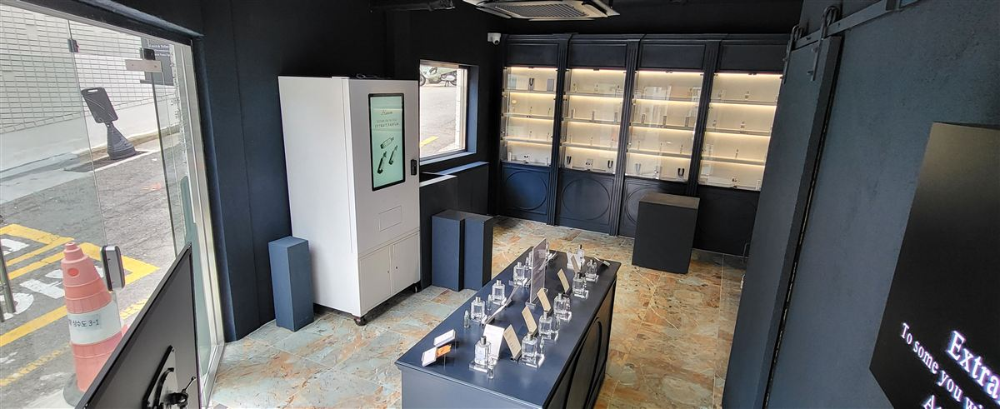

계양구 무인자판기 설치 완료 — 뷰티·소품 무인 매장 터치형 상품 자판기

인천 계양구는 계산동 일대에 상가와 학원가가 모여 있고, 작전동·효성동은 오래된 주거지와 골목 상권이, 박촌동·병방동 쪽은 새 아파트 단지가 이어집니다. 동네 상권에서 작은 매장을 여는 분들이 요즘 많이 묻는 게 "직원을 두지 않고 매장을 돌릴 수 있느냐"입니다. 인건비는 오르고 영업시간은 늘려야 하니, 계산대 자리를 기계에 맡기는 방식을 찾게 됩니다.
어떻게 구성했나
위 사진은 H포스가 시공한 뷰티·소품 무인 매장 사례입니다. 가운데 테이블과 벽장에는 샘플과 진열용 상품만 두고, 실제 판매는 입구 옆에 세운 터치형 자판기가 맡습니다. 손님은 진열대에서 제품을 살펴본 뒤 화면에서 같은 제품을 골라 결제하면 아래 배출구로 상품이 나옵니다.
이렇게 나누면 좋은 점이 분명합니다. 진열대에는 판매용 재고가 없으니 분실 걱정이 줄고, 매장은 전시 공간처럼 깔끔하게 꾸밀 수 있습니다. 자판기 화면은 영업시간 외에도 제품 소개 영상이나 이미지를 띄우는 광고판 역할을 합니다.
결제는 카드·삼성페이·카카오페이·네이버페이·QR 모두 됩니다. 향수·화장품처럼 단가가 있는 상품도 현금 없이 바로 결제되니 무인 매장과 잘 맞습니다.
앱으로 원격 관리, 설치는 반나절
사장님이 매장에 없어도 앱으로 오늘 무엇이 몇 개 팔렸는지, 어느 칸이 비었는지 확인합니다. 들르는 날에는 빈 칸만 채우면 됩니다. 매장 CCTV와 함께 두면 밤 시간 운영도 한결 안심이 됩니다. 설치는 콘센트 하나만 있으면 반나절이면 끝나 오픈 일정에 부담이 없습니다.
구매·임대·렌탈 중 편한 방식으로
처음 무인 매장을 여는 경우라면 초기 비용을 낮추는 임대나 렌탈로 시작해 반응을 본 뒤 구매로 바꾸는 분들도 있습니다. 상품 크기에 따라 진열 칸 구성이 달라지니, 파실 품목을 알려주시면 맞는 기종을 골라 드립니다. 설치비는 무료, 세금계산서 발행도 됩니다.
계양구 무인자판기 상담은 무료
계산동·작전동·효성동·임학동·박촌동·병방동·귤현동·동양동 등 계양구 어디든 방문합니다. 무인 매장·사무실·학원·병의원·헬스장 등 자리를 직접 보고 기종과 배치를 제안해 드립니다. 상담과 견적은 무료입니다.
※ 사진은 H포스가 시공한 설치 사례이며, 글에 적힌 지역의 현장 사진은 아닙니다.
📞 계양구 무인자판기 설치 상담 010-6832-1994